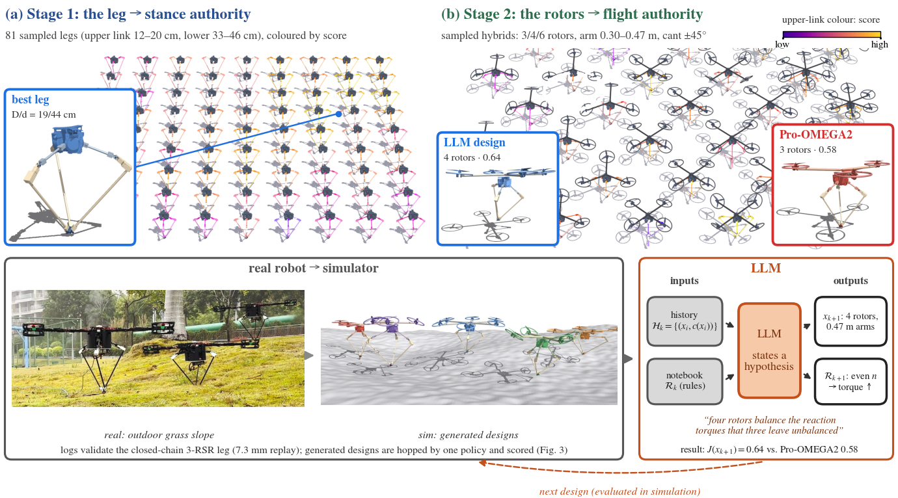

Co-Designing towards Deployable Hopping:
An LLM Shapes a Hopper's Leg and Rotors
Anonymous submission. Companion video.
Video
0–10 s: real to sim. The real Pro-OMEGA2 (top) and the validated simulator (bottom) run the same controller on a stop-and-go command (one sensor-noise seed; the simulated robot completes this run in 3 of 6 seeds). 10–29 s: four designs under the same design-conditioned policy, one seed each (the scores J in the paper use 6 seeds): forward speed ramped to 1.2 m/s, then hopping in place with a 1.5 m/s sideways kick. Pro-OMEGA2 is shown with its real 0.567 m arms.
Overview

Abstract
Taking a dynamic robot from the lab to the field is limited not only by its controller but by its body: sim-to-real transfer can close a dynamics gap, but cannot add control authority the hardware lacks. A single-legged hopper acts on its body only through its foot during the stance phase; propellers extend this authority into flight, but how to shape the leg and rotors together is still not well understood. As preliminary work, an LLM co-designs both in a simulator grounded in the real hopper Pro-OMEGA2, whose closed-chain three-chain revolute-spherical-revolute (3-RSR) leg is validated against its logs (7.3 mm error); rotors follow commercial-part mass laws, and one policy hops every design. For the leg, the LLM finds that foot clearance is set by how far the leg can retract, not by push-off, and a refined protocol raises its rule accuracy from 0.60 to 0.94. For the rotors, at equal budget Claude and GPT score below Bayesian optimisation and random search (0.59 and 0.57 vs. 0.64) and level with CMA-ES (0.57), but neither proposes an unbuildable design (the baselines waste 2-4 of 24); Claude's best design, four rotors on Pro-OMEGA2's leg, is faster and steadier than Pro-OMEGA2 (0.64 vs. 0.58). These results show that the LLM can design buildable robots that improve on the original and explain its choices, with scores in the range of black-box optimisers.